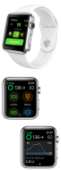

Apple Watch
Apple Watch¶
The Loop user can directly enter carbs and boluses and turn on or off premeal or override settings from the watch, without needing to access the iPhone.

There are two screens in the Loop watch app, shown in the bottom half of the graphic above. By swiping left or right, the other screen is displayed. The eventual (predicted) glucose feature, shown on both screens in the graphic can be turned off as a feature in Loop 3, but requires the user to rebuild. It is on by default. (Or will be shortly)
The screen on the left side of the graphic shows Loop status, current glucose, trend arrow, eventual glucose, carb tool, bolus tool, premeal icon and override icon. If necessary, use the crown (or swipe up and down) to see the full display.
After tapping on the carb or bolus tools, you can adjust the entries using the crown to dial in more/less. (The carb entry screen is shown at the top of the graphic above.)
- The carb tool allows you to choose the amount, absorption time using the standard icons and adjust the time the carbs are planned to be consumed. After tapping continue on the carb screen, the meal bolus screen is displayed - carbs are only saved after selecting Save or Save and Bolus on the meal bolus screen.
- The bolus tool displays the recommended bolus. If you want to decrease/increase from the recommended amount, use the digital crown or tap on +/- icons to modify.
- Once the bolus button is tapped, the bolus command is only delivered after the user turns the digital crown (as directed) to align the two triangles.
- If you tap Save and Bolus on the bolus screen when entered from the carb screen AND then fail to turn the digital crown to confirm the bolus, that means the bolus was not delivered but the carbs were saved.
If you swipe the Apple Watch Loop screen from right-to-left, a second screen, as displayed on the right side of the graphic above, is available. This second screen displays a graph of recent glucose and predicted glucose data. The crown can be turned to display IOB, COB, Net Basal Rate (with respect to scheduled rate) and in some cases Reservoir Units. (A recently changed pod may show the reservoir level from the prior pod - just ignore that. It goes away within 24 hours.)
A loop complication exists to show BG on the watch face but the update rate is limited by Apple. If you have a Loop complication installed in the watch face, you can simply tap the complication to open Loop's watch app.
Eventual Glucose on Watch¶
One feature on the Watch app that can be turned on and off with Loop 3 is the eventual glucose display on the watch. That display is shown on the graphic above with current glucose on left, trend arrow beside it and eventual (from prediction) glucose on the right.
If this is a feature you want turned off, please follow the directions on the Code Customization page (found under the Version tab): Build Time Features.
Adding a Watch to Existing Loop¶
If you add an Apple Watch after building Loop using Xcode on a computer, you will need to pair your watch to your iPhone and then rebuild Loop to enable the Loop watch app to show up as an available watch app. If you use the new, Loop 3 only, Build Loop using GitHub Actions process that enables building without needing a Mac, the watch app should work so long as you have the watch paired to your phone when you install from TestFlight.
Watch Hardware and OS Requirements¶
Loop 2.2.9 and FreeAPS is currently supported with all released versions of the Apple Watch and Apple watchOS 4.1 and newer.
Loop 3 requires newer versions of the watch and requires watchOS 8 as a minimum.
watchOS 8 Compatibility:¶
watchOS 8 requires iPhone 6s or later with iOS 15 or later and one of the following Apple Watch models:
- Apple Watch Series 3.
- Apple Watch Series 4.
- Apple Watch Series 5.
- Apple Watch SE.
- Apple Watch Series 6.
- Apple Watch Series 7.
- Not all features are available on all devices.
watchOS 9 Compatibility:¶
watchOS 9 requires iPhone 8 or later with iOS 16 or later and one of the following Apple Watch models:
- Apple Watch Series 5.
- Apple Watch SE.
- Apple Watch Series 6.
- Apple Watch Series 7.
- Apple Watch Series 8.
- Apple Watch Ultra.